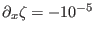
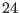
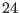

Next: Turbulence under breaking surface Up: Idealised scenarios Previous: Couette-flow Contents
A pressure-gradient driven open channel flow is investigated here with
a prescribed surface slope
 at a fixed water
depth of  m. No surface stress is applied, and rotation and
stratification are neglected. The simulation is run for  h until
a steady-state is reached. The specification of all these parameters
and those related to the turbulence models by use of the nml-files is
analogous to section 12.1.1.
m. No surface stress is applied, and rotation and
stratification are neglected. The simulation is run for  h until
a steady-state is reached. The specification of all these parameters
and those related to the turbulence models by use of the nml-files is
analogous to section 12.1.1.
The surface slope is set in the namelist ext_pressure in the input file obs.nml. How the parameters given in this file are interpreted by GOTM is described in section 3.2.8 and briefly also in obs.nml. This file typically contains information about ``observed'' quantities that are used to either force the model (like internal and external pressure gradients) or for comparision with computed results. In the latter case, ``observed'' quantities are displayed in the output file next to the computed quantities.
If you want to try out the different turbulence models mentioned in the couette-case (see section 12.1.1), simply copy the corresponding files from the respective subdirectories to the current directory with the GOTM executable. Note that in gotmturb.nml we now set turb_method = 3. This implies that the turbulent fluxes are computed from a second-order turbulence model. A new thing in GOTM 3.2 is that parameters for the second-order model can now be directly specified via the ``scnd'' namelist in gotmturb.nml. For the theoretical background of this, please see section 4.2
In the following publications some of the results in comparison to laboratory data are shown: Burchard et al. (1998), Burchard et al. (1999), Burchard (2002b). The simulation has been motivated by the work of Baumert and Radach (1992).
Karsten Bolding 2012-01-24